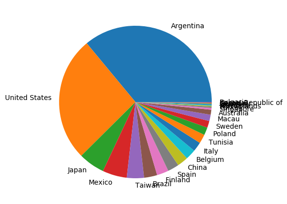
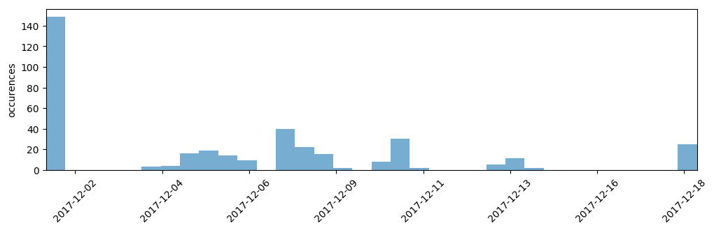
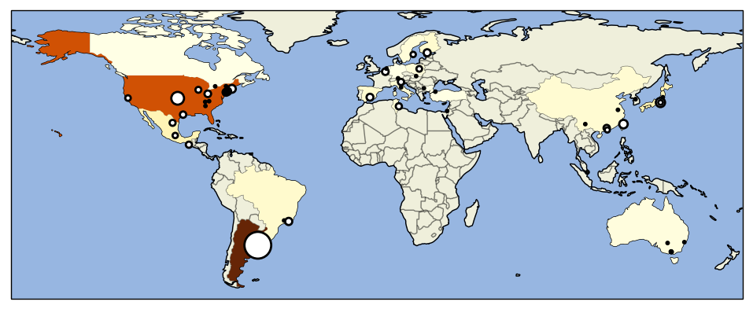
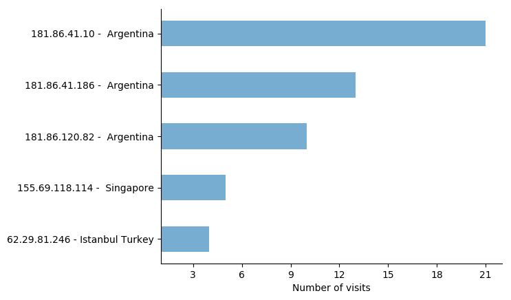

Basic example¶
An example showcasing some Lala routines.
import os
from lala import WebLogs
# LOAD ALL RECORDS TO ANALYSE AND AVAILABLE PRIMERS
logs_path = os.path.join('data', 'example_logs.txt')
weblogs, errored_lines = WebLogs.from_nginx_weblogs(logs_path)
# PLOT COUNTRIES PIE CHART
ax, country_values = weblogs.plot_piechart('country_name')
ax.figure.set_size_inches((5, 5))
ax.figure.savefig('basic_example_piechart.png', bbox_inches='tight')
# PLOT COUNTRIES MAP
ax = weblogs.plot_geo_positions()
ax.figure.savefig('basic_example_worldmap.png', bbox_inches='tight')
# PLOT UK CONNECTIONS TIMELINE
ag_entries = weblogs[weblogs.country_name == 'Argentina']
ax = ag_entries.plot_timeline(bins_per_day=2)
ax.figure.savefig('basic_example_timeline.png', bbox_inches='tight')
# PLOT MOST FREQUENT VISITORS
most_frequent_visitors = weblogs.most_frequent_visitors(n_visitors=5)
ax = weblogs.plot_most_frequent_visitors(n_visitors=5)
ax.figure.savefig('basic_example_frequent_visitors.png', bbox_inches='tight')
Outputs:
   {kind=link}
{kind=link}
{kind=link}
{kind=link}